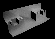
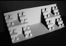
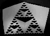

Fractal Folds Lab Procedure
Here we describe four experiments. Many others are possible.
The Cantor middle thirds set

Another Cantor set
Variations on the Cantor set

The Sierpinski gasket

Return to
PaperFolding Lab
.